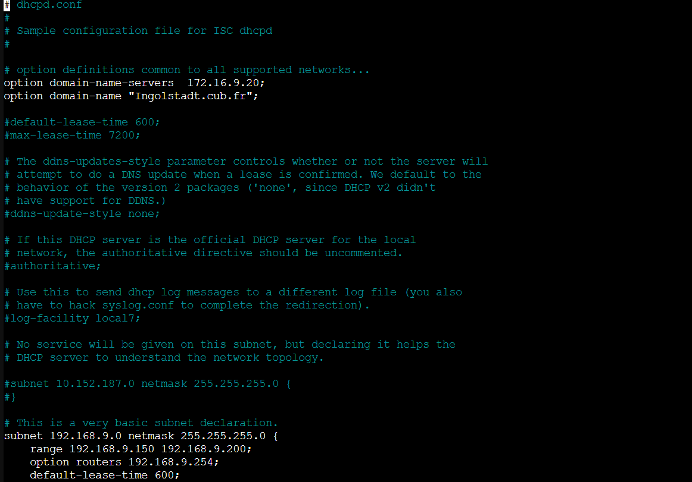
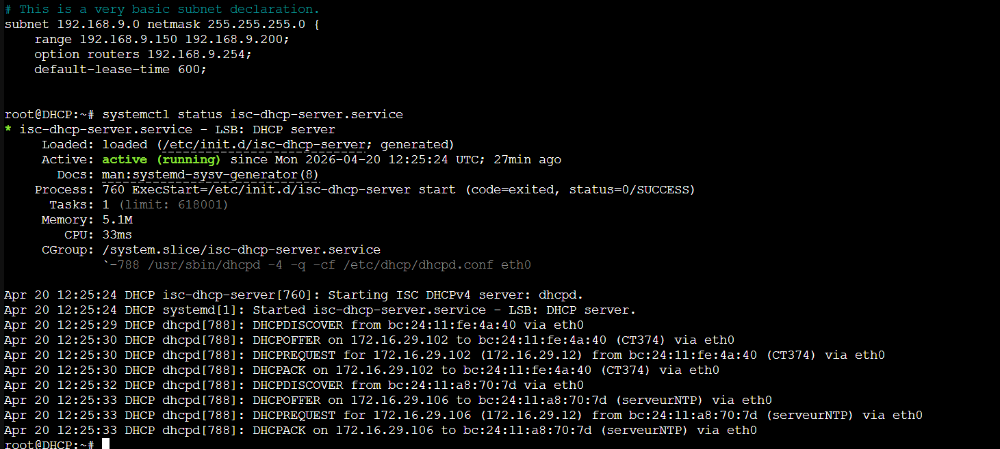

DOCUMENTATION TECHNIQUE : MISE EN ŒUVRE D'UN SERVEUR DHCP SOUS DEBIAN
Projet : Gestion dynamique des adresses IP sur le segment réseau Proxmox
Date : Mars 2026
Environnement : Debian (VM) sur Hyperviseur Proxmox
I. INTRODUCTION
Le service DHCP permet d'automatiser la configuration réseau des hôtes. Il évite les erreurs de saisie manuelle et les conflits d'adresses IP au sein d'un parc informatique.
II. PRÉREQUIS RÉSEAU DU SERVEUR
Pour assurer la stabilité du service, le serveur DHCP doit disposer d'une configuration réseau statique.
- Interface réseau : eth0
- Adresse IP Statique : 172.16.29.12/24
- Passerelle (Gateway) : 172.16.29.254
III. INSTALLATION ET CONFIGURATION
1. Installation du paquet
Le serveur utilise le logiciel standard ISC-DHCP-Server.
2. Configuration de l'interface d'écoute
Fichier de configuration : /etc/default/isc-dhcp-server
3. Configuration du scope (Plage d'adresses)
Fichier de configuration : /etc/dhcp/dhcpd.conf
subnet 172.16.29.0 netmask 255.255.255.0 {
range 172.16.29.50 172.16.29.100;
option routers 172.16.29.254;
option subnet-mask 255.255.255.0;
option broadcast-address 172.16.29.255;
}

Capture d'écran du fichier /etc/dhcp/dhcpd.conf
IV. TEST DU DHCP
Vérification du service : On s'assure d'abord que le service est bien actif sur le serveur.

Vérification de l'état du service (Active: running)
Vérification sur la VM cliente : On vérifie que le client reçoit bien une adresse IP de la plage définie.
- Exécution de la commande
ip asur le client. - Test de connectivité vers la passerelle et l'extérieur (Ping).

Attribution réussie d'une adresse IP (172.16.29.51) sur le poste client
✅ Le service DHCP est fonctionnel !